第3课 学会文件属性
0、笔记、指法、日志（变色卡）、范例；
1、新标签、软件下载、Linux，
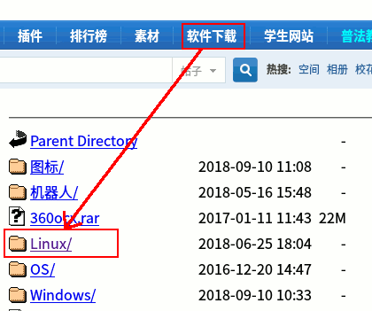
找到 indic...，瞄准点右键，链接另存为，桌面，保存；
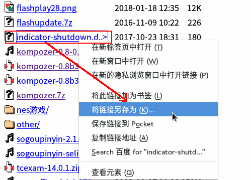
2、最小化浏览器窗口，回到桌面，
找到indic...，瞄准点右键，选“属性”；
3、在出来第面板里，点第二个“权限”，
打勾下边的“允许作为程序执行”，关闭窗口；
4、桌面上的图标变成关机，最后关机点一下就可以；
5、打开桌面上的主文件夹，或者左上角“活动-文件”，左边找到“计算机”；
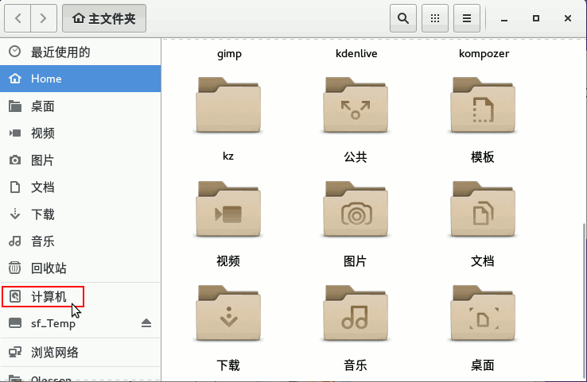
6、点“计算机”，找到最后一个var，瞄准点右键，属性，
看一下内容大小是GB，占空间比较大，拖到一边；
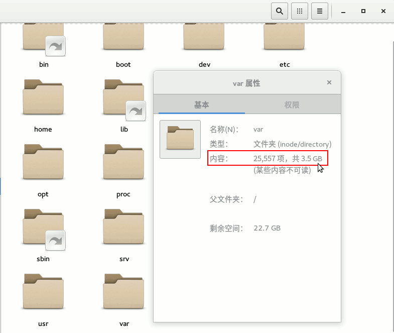
7、再点开run，找到一个pid文件，里面只有几个数字；
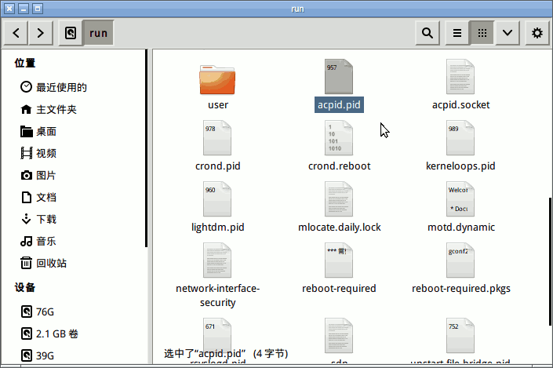
8、瞄准pid文件，点右键-属性，
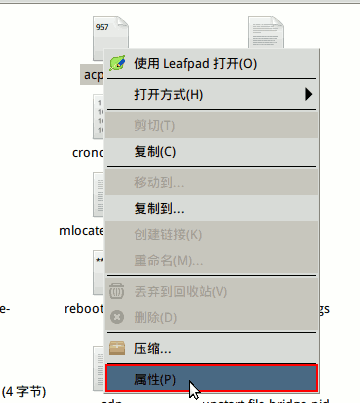
9、属性面板显示，文件大小是字节，很小的文件，拖到一边；
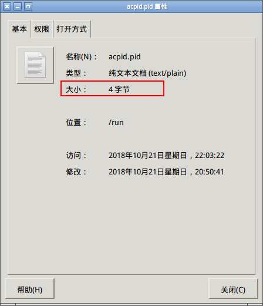
10、再后退一步，打开usr，share，backgrounds，gnome文件夹；
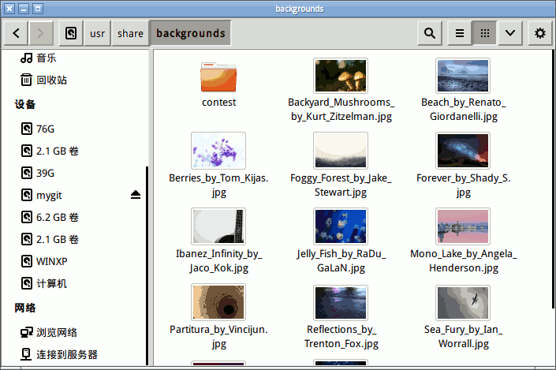
11、在里面点右键，查看属性，找到KB，它是一千字节，三位一个逗号；
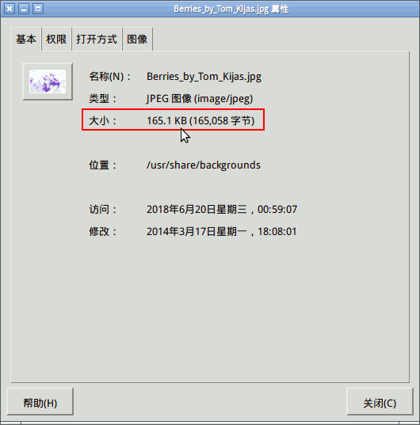
12、再找一个MB的，它比KB大一千倍，六位两个逗号；
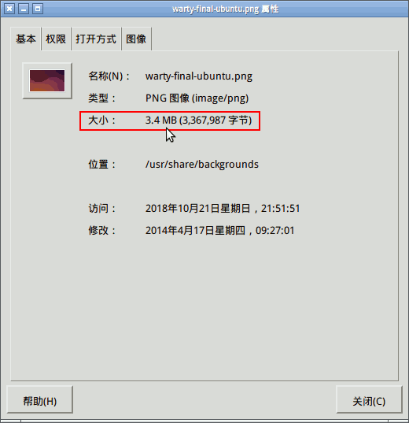
13、把四个属性面板排好，按照 字节、KB、MB、GB 的顺序让老师检查；
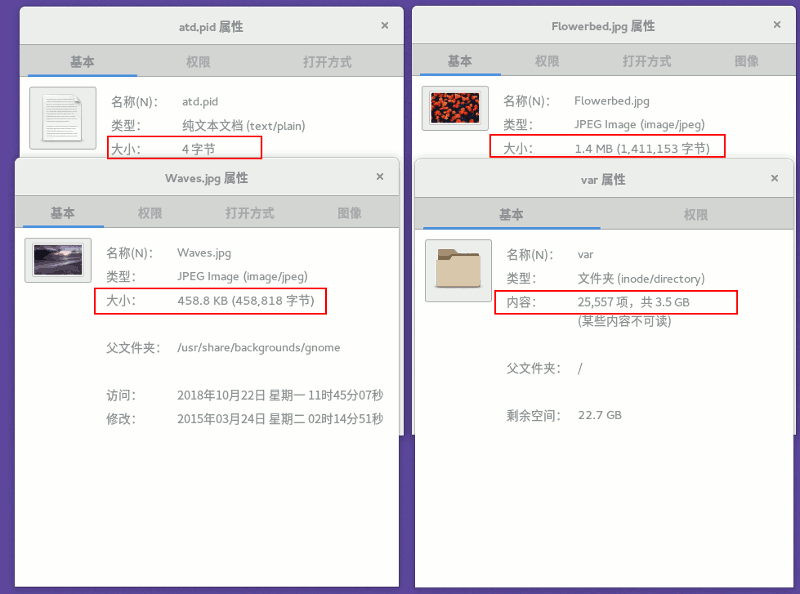
本节学习了的基础知识，如果你成功地完成了练习，请继续学习下一课内容；
返回目录 下一课
本教程由TeliuTe制作|著作权所有
基础教程网：http://teliute.org/
美丽的校园……
转载和引用本站内容，请保留作者和本站链接。